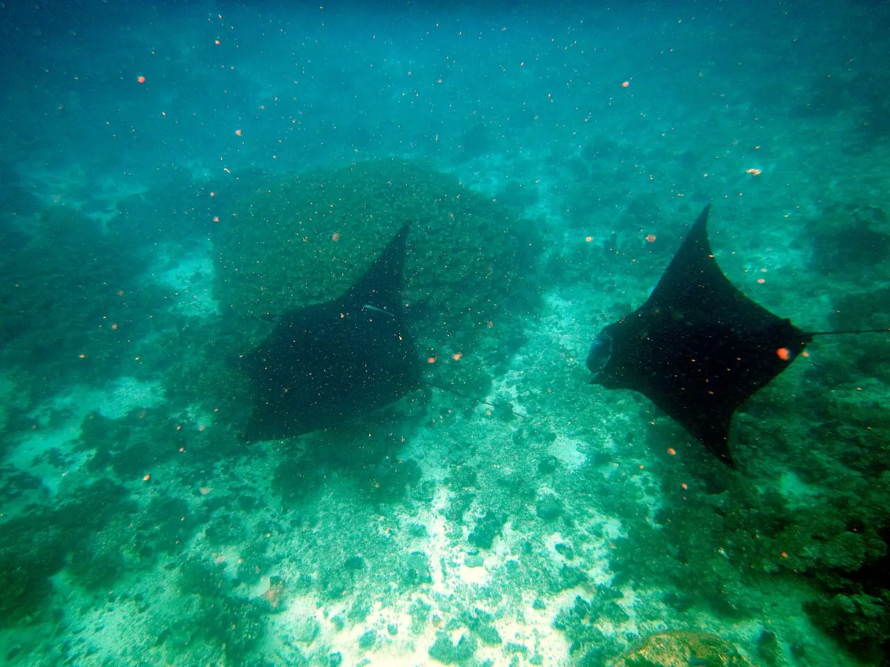

Passage des raies manta — Drawaqa
Yasawa, Fidji · snorkeling

Étroit chenal entre les îles de Drawaqa et Naviti, dans l’archipel des Yasawa, où les raies manta viennent se nourrir en saison. Les sorties partent des petits resorts voisins.
- Lieu
- Yasawa, Fidji
- Niveau
- Intermédiaire
- Activités
- snorkeling
- Type d'eau
- Mer / océan
- Coordonnées
- -17.17, 177.19 (position approximative du secteur)
Dangers à connaître
- Courant marqué dans le chenal : reste avec le guide.
- Bateaux d’excursion dans le passage.
Le conseil d'Ocean Buddy
Garde tes distances, ne touche jamais les raies et laisse-les venir à toi : c’est aussi le meilleur moyen de les voir longtemps.
Ouvrir dans Ocean Buddy Télécharger sur l'App Store
Source : Fiche Ocean Buddy · septembre 2026 · à vérifier localement.